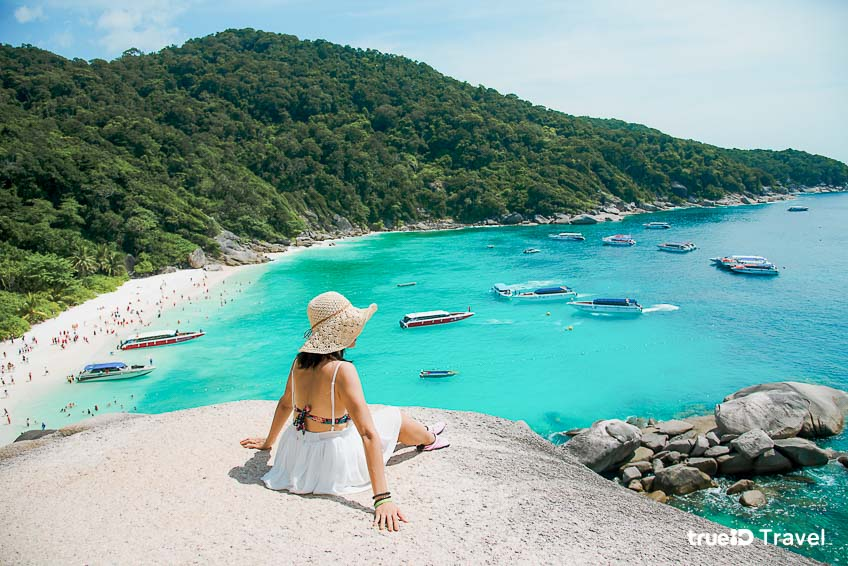

หมู่เกาะสิมิลัน พังงา

ที่สุดของทะเลไทยต้องยกให้ หมู่เกาะสิมิลัน ค่ะ ซึ่งตั้งอยู่ใน อุทยานแห่งชาติหมู่เกาะสิมิลัน จังหวัดพังงา นักท่องเที่ยวทั่วโลกต่างก็ยกให้ที่นี่เป็น "เกาะสวรรค์" เลยทีเดียวค่ะ เพราะน้ำทะเลที่ใสราวกระจก ดูเผินๆ เหมือนเรือกำลังลอยอยู่กลางมหาสมุทร

จุดชมวิวที่ห้ามพลาดเลยก็คือ จุดชมวิวหินเรือใบ ค่ะ เรียกได้ว่า เป็นแลนด์มาร์คของการมาเที่ยวสิมิลันเลยทีเดียวค่ะ นอกจากนี้ใต้ทะเลของหมู่เกาะสิมิลันนั้น ยังเต็มไปด้วยปะการังที่สวยงาม และสัตวน้ำนานาชนิด เป็นหมู่เกาะที่อุดมสมบูรณ์มากๆ อีกแห่งของไทยเราเลยทีเดียวค่ะ
ที่อยู่ :
อุทยานแห่งชาติหมู่เกาะสิมิลัน บ้านทับละมุ ถนนเพชรเกษม
ตำบลลำแก่น อำเภอท้ายเหมือง จังหวัดพังงา